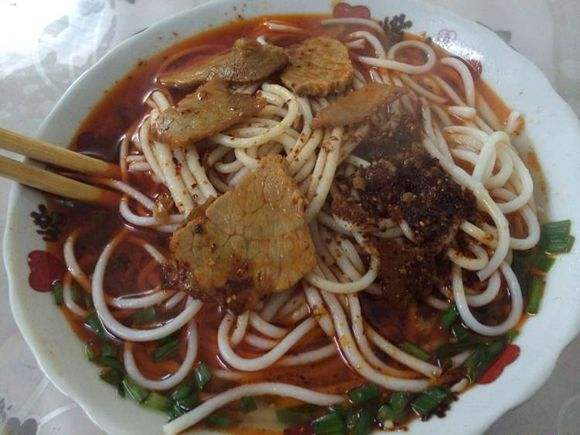

| 释义 | italic red 青树坪米粉，顾名思义，是湖南娄底双峰县青树坪镇的特产，此粉远近扬名，若是有人说他去过青树坪，却没吃到地道的青树坪米粉，那他便是白来了。 |
|---|---|
| 原料 | ` 一般的米粉用的是湿粉，但青树坪米粉用的是纯粮制造的干粉，吃起来有韧劲。这也是青树坪米粉能够征服口味挑剔的青树坪人民的重要原因。产自本地的米粉经青树坪厨师加工后，吃起来回味无穷。 |
| 做法 | green 汤底：用骨头熬汤，放入一些大料、桂皮之类的香料，好了之后将汤与骨头分离，另外用锅把油烧热再放入辣椒粉炸一下再倒入汤里，在汤底中根据个人爱好加入盐、鸡精、山胡椒油之类的调料，再放点香葱。 煮粉：取当地新鲜制作青树坪米粉若干，置于温水中泡一段时间，至米粉稍软。烧半锅水，将米粉放入沸水中，一分钟左右捞出，置于碗内，再将制作好的汤底和码子倒入碗内，加上一个煎蛋，一些花生，一些葱花，一碗香辣可口的青树坪米粉便做好了。 |
| 特色 | 香味沁人，辣味给力，劲道十足。 |